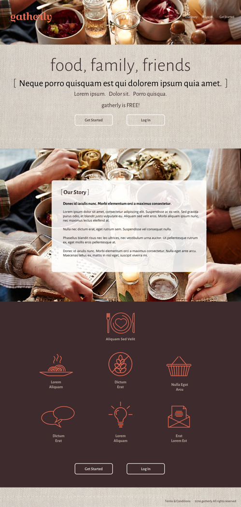

gatherly is a web app that helps people create get togethers and celebrations. This product is a prototype in the works and is my concept.

The Problem
If users want to create a gathering for a special ocassion, like a birthday celebration or an informal evening with friends, creating the menu is a time-consuming chore. Users have to hunt through recipes on the internet, in magazines, or cookbooks and if someone has a food allergy creating a menu is an even bigger task.
Research
I asked users to fill out a questionaire which provided me with data about whether or not they hosted special ocassions or gatherings and how they created the menus and shopping lists, invited guests, and what they liked and disliked about having these get togethers. I also researched possible competitors who might be trying to solve similar problems and found them to fall short in several areas.
The Solution
To create gatherings faster and easier by providing entire themed menus including only recipes that fit the parameters specified by the user (such as food allergies), creating shopping lists, and letting users invite guests or include other hosts.
Highfidelity Mockups
write something here
